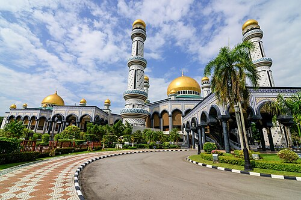
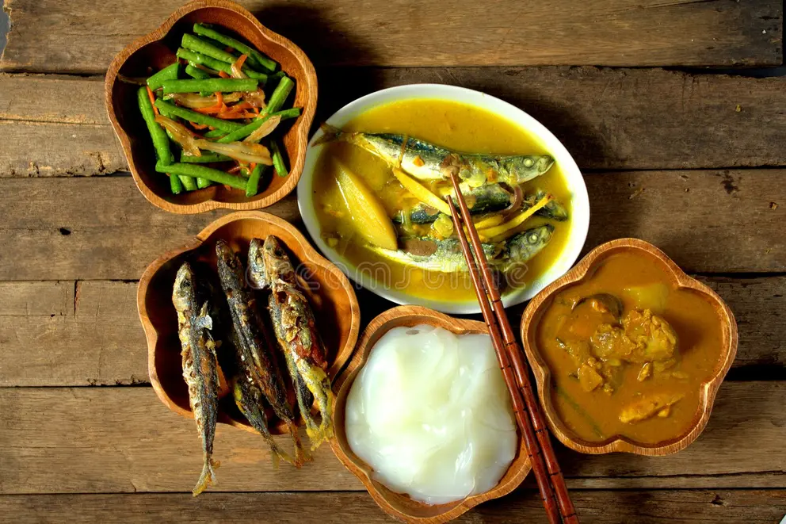
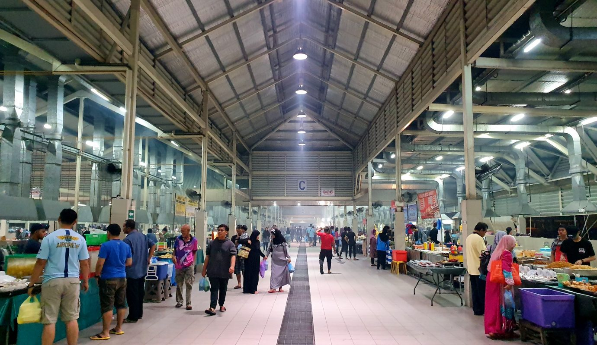

Malay
The Malay community has a central place in Brunei's national identity and traditions, including the national philosophy Melayu Islam Beraja.
Our story starts on a river. Explore the history, culture and people of Brunei.
Brunei Darussalam is a small, sovereign country on the northern coast of the island of Borneo in Southeast Asia. It is bordered by the Malaysian state of Sarawak and has a coastline along the South China Sea. Its capital is Bandar Seri Begawan.
Brunei is divided into Brunei-Muara, Belait, Tutong and Temburong. Brunei-Muara contains the capital, while Temburong is separated from the other districts by part of Malaysia.
Brunei has a long history as a trading centre and sultanate. Kampong Ayer, built along the Brunei River, was an important centre of everyday life and trade.
Brunei is home to diverse communities and cultural traditions.
The Malay community has a central place in Brunei's national identity and traditions, including the national philosophy Melayu Islam Beraja.
An indigenous community with a strong heritage of agriculture, local dialect and distinctive food traditions.
An indigenous community with traditional links to farming, local crafts and the land.
An indigenous Bornean community with distinctive customs, crafts and community traditions.
Known across Borneo for longhouse traditions, weaving, beadwork and cultural performances.
The Chinese Bruneian community contributes to the country's social, cultural and business life.

Islam is Brunei's official religion. The country's national philosophy is Melayu Islam Beraja (Malay Islamic Monarchy).
Brunei is also home to Chinese and indigenous communities with their own cultural and religious traditions.
Kampong Ayer is a historic settlement of stilt houses along the Brunei River, with a long connection to trade and river life.
Brunei's crafts include jong sarat textiles, silverwork, brasswork and traditional boat making.
Traditional arts include adai-adai songs and the gulingtangan bronze gong ensemble.

A well-known Bruneian dish made from sago starch, traditionally eaten with chandas and dipping sauces.

A popular local meal of rice, fried chicken and sambal.

Night markets offer local snacks, meals and a lively place to experience everyday food culture.